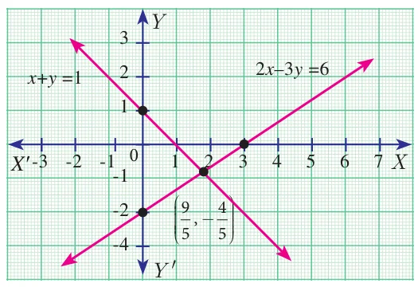

“A person who can, within a year, solve \(x^{2} - 92y^{2} = 1\) is a mathematician” — Brahmagupta
1499/1500 – 1557 AD(CE)
Niccolo Fontana Tartaglia was an Italian mathematician, engineer, surveyor and bookkeeper from then Republic of Venice (now Italy). He published many books, including the first Italian translations of Archimedes and Euclid, and an acclaimed compilation of mathematics. Tartaglia was the first to apply mathematics to the investigation of the paths of cannonballs; his work was later validated by Galileo’s studies on falling bodies.
Tartaglia along with Cardano were credited for finding methods to solve any third degree polynomials called cubic equations. He also provided a nice formula for calculating volume of any tetrahedron using distance between pairs of its four vertices.
Learning Outcomes
- To solve system of linear equations in three variables by the method of elimination
- To find GCD and LCM of polynomials
- To simplify algebraic rational expressions
- To understand and compute the square root of polynomials
- To learn about quadratic equations
- To draw quadratic graphs
- To learn about matrix, its types and operations on matrices
3.1 Introduction
Algebra can be thought of as the next level of study of numbers. If we need to determine anything subject to certain specific conditions, then we need Algebra. In that sense, the study of Algebra is considered as “Science of determining unknowns”. During third century AD(CE) Diophantus of Alexandria wrote a monumental book titled “Arithmetica” in thirteen volumes of which only six has survived. This book is the first source where the conditions of the problems are stated as equations and they are eventually solved. Diophantus realized that for many real life situation problems, the variables considered are usually positive integers.
The term “Algebra” has evolved as a misspelling of the word ‘al-jabr’ from one of the important work titled Al-Kitāb al-mukhtaşar fī hisāb al-jabr wa’l-muqābala (“The Compendious Book on Calculation by Completion and Balancing”) written by Persian Mathematician Al-Khwarizmi of 9th Century AD(CE) Since Al-Khwarizmi’s Al-Jabr book provided the most appropriate methods of solving equations, he is hailed as “Father of Algebra”.
In the earlier classes, we had studied several important concepts in Algebra. In this class, we will continue our journey to understand other important concepts which will be of much help in solving problems of greater scope. Real understanding of these ideas will benefit much in learning higher mathematics in future classes.
Simultaneous Linear Equations in Two Variables
Let us recall solving a pair of linear equations in two variables.
Definition
Linear Equation in two variables
Any first degree equation containing two variables \(x\) and \(y\) is called a linear equation in two variables. The general form of linear equation in two variables \(x\) and \(y\) is \(ax + by + c = 0\), where atleast one of \(a, b\) is non-zero and \(a, b, c\) are real numbers.
Note that linear equations are first degree equations in the given variables.
Note
- \(xy - 7 = 3\) is not a linear equation in two variables since the term \(xy\) is of degree 2.
- A linear equation in two variables represent a straight line in \(xy\) plane.
Example 3.1
The father’s age is six times his son’s age. Six years hence the age of father will be four times his son’s age. Find the present ages (in years) of the son and father.
Solution
Let the present age of father be \(x\) years and the present age of son be \(y\) years
Given, \(x = 6y \qquad \ldots (1)\)
\(x + 6 = 4(y + 6) \qquad \ldots (2)\)
Substituting (1) in (2), \(6y + 6 = 4(y + 6)\)
\(6y + 6 = 4y + 24 \;\Rightarrow\; y = 9\)
Therefore, son’s age \(= 9\) years and father’s age \(= 54\) years.
Example 3.2
Solve \(2x - 3y = 6\), \(x + y = 1\)
Solution

\(2x - 3y = 6 \qquad \ldots (1)\)
\(x + y = 1 \qquad \ldots (2)\)
\(\begin{array}{lrcl} (1) \times 1 \Rightarrow & 2x - 3y &= &6 \\ (2) \times 2 \Rightarrow & 2x + 2y &= &2 \\ \hline & -5y &= &4 \end{array} \;\Rightarrow\; y = \frac{-4}{5}\)
Substituting \(y = \frac{-4}{5}\) in (2), \(x - \frac{4}{5} = 1\) we get, \(x = \frac{9}{5}\)
Therefore, \(x = \frac{9}{5}\), \(y = \frac{-4}{5}\).